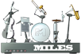
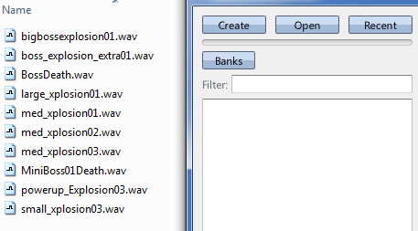
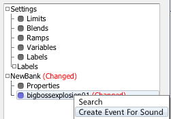
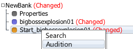
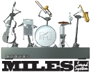

 |
Playing A Sound |
| Navigation |
In the last guide, a capture was loaded and played using assets previously created, but now we're going to create our own sound to play.
Requisite Terminology
New Terminology
Steps

This creates a Sound Asset that loads the source WAV file and readies it for play. As long as it is still loading, the sound asset will have a period (.) before it's name, and the status bar at the bottom of the screen will say "Compressing" and not "Idle".

This creates an Event Asset with a Start Sound event step automatically created inside of it, so that it is immediately set up to play the sound it was created from. Events that are created in such a fashion are named after the Sound they are created from, with "Start_" prepended.

This auditions the event - meaning it runs it and records the result to the Timeline. If you select the Timeline Tab along the top, you will see an entry on the Timeline representing the event you auditioned. If you don't, make sure the Scratch Pad is selected.
That's it! You have added the sound into a sound bank, and then created an event that will play the sound when triggered (either in Miles Studio or in your game)! If all you needed were one-off sounds such as this, you could drag in more sounds, create events to play them as you did in step 2, and be done!
| A First Look | Sound Designer User Guide | Stopping Sounds |
|
 |
Miles Sound System 9.3b
E-mail miles3@radgametools.com for technical support. Copyright © 1991-2012 by RAD Game Tools, Inc. All Rights Reserved. |